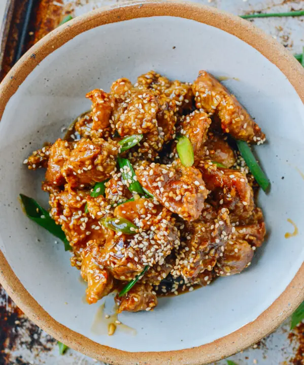

Baked Sesame Chicken
- Total time40 mins
- Serves4
- Ingredients19
- Steps4

Ingredients
Chicken
- 1 pound boneless skinless chicken thighs
- 1 tablespoon cornstarch
- 1 teaspoon sesame paste
- ¼ teaspoon salt
- 1 teaspoon Shaoxing wine
- 1/4 cup all purpose flour
- 2 tablespoons toasted sesame seeds
- 1/8 teaspoon fresh ground white pepper
Sauce
- 2 teaspoons canola oil
- 1 clove garlic (minced)
- 1 tablespoon Shaoxing wine
- 3/4 cup chicken stock
- 1/2 teaspoon rice wine vinegar
- 3 tablespoons sugar
- 1 tablespoon soy sauce
- 1 teaspoon dark soy sauce
- 2 teaspoons sesame oil
- 2 tablespoons cornstarch (mixed into a slurry with 2 tablespoons/30 ml water)
- 1 scallion chopped
Directions
- Mix the chicken with the cornstarch, sesame paste, salt, and Shaoxing wine and set aside for 20 minutes to marinate. Then mix the flour, sesame seeds, and white pepper in a separate bowl. Preheat the oven to 475°F/250°C.
- Next, use your hands to mix the marinated chicken again until there is no standing liquid. Dredge the chicken pieces in the dry mixture, and place them on a sheet pan lined with parchment paper or nonstick foil. Bake at 475 degrees for 8 minutes on the top rack. Flip the chicken pieces and broil on low for 3 minutes until golden brown. Remove from oven.
- Heat your wok to medium heat and add oil and garlic. Stir for 5 seconds, and then add the Shaoxing wine. After another 5 seconds, immediately add the chicken stock, rice wine vinegar, sugar, soy sauces, and sesame oil until everything's at a simmer.
- Gradually add the cornstarch slurry to the sauce while stirring constantly. Let simmer for 20 seconds. The sauce should be thick enough to coat a spoon. Add the chicken and scallions and toss until coated with sauce. Garnish with toasted sesame seeds and serve.
Recipe credit: thewoksoflife.com